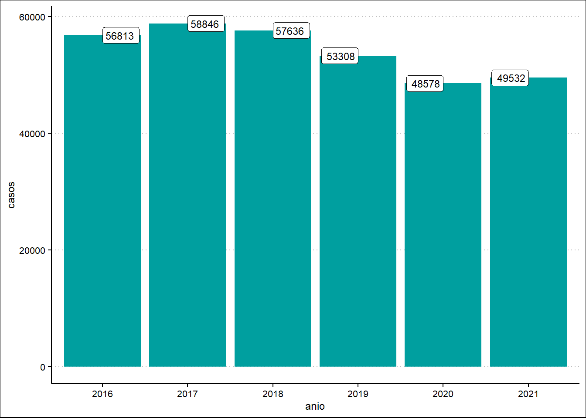
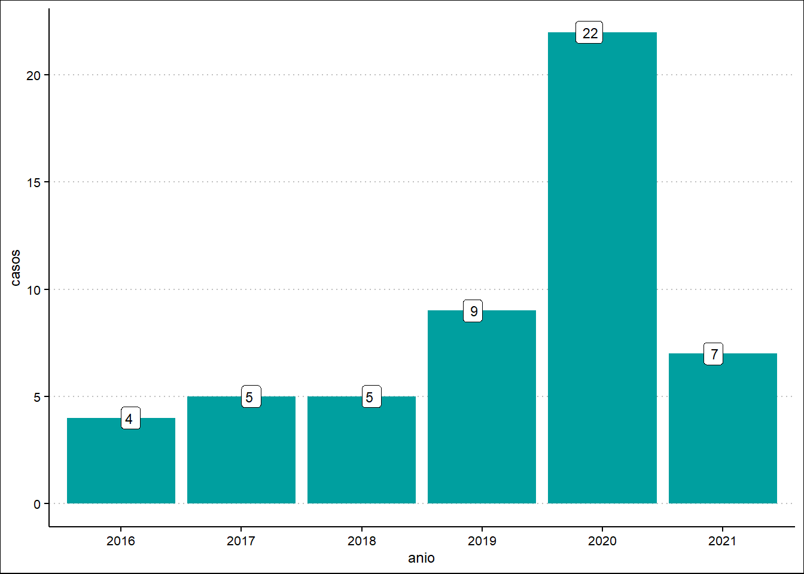
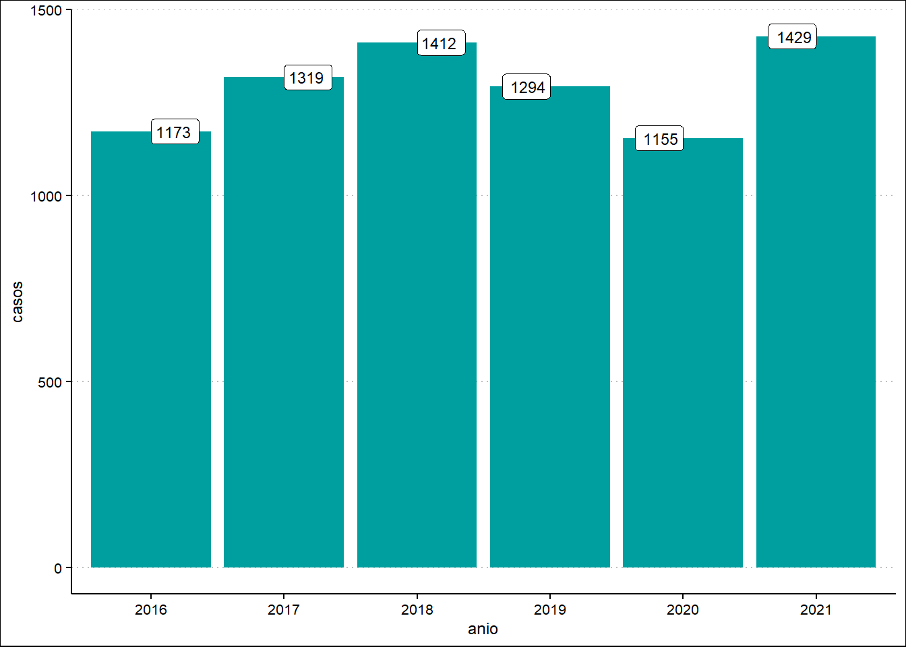
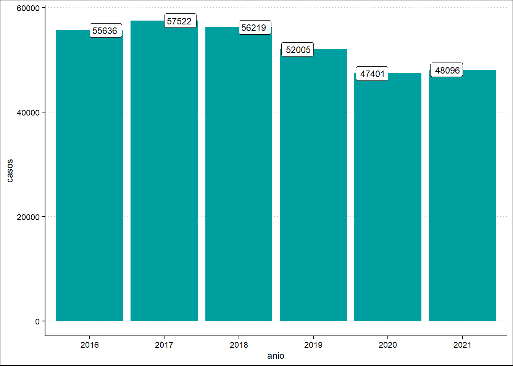

Mostrar código
library(tidyverse)
library(readxl)Laila Villavicencio
En el contexto de la pandemia de la COVID-19 los Estados priorizaron sus recursos económicos y logísticos en tratar de contener la pandemia, la cual era de índole desconocida. Tal es así que el aislamiento social fue una de las primeras medidas de urgencia decretada por la mayoría de los países y en el Perú no fue la excepción. El 16 de marzo de 2020, bajo el mando de Martín Vizcarra, se decretó el estado de emergencia y el aislamiento social obligatorio.
Con esta medida los centros laborales se insertaron al mundo virtual, las instituciones educativas también. Surgieron nuevas formas de organización social. En sector salud los centros médicos y postas de salud suspendieron las consultas externas y ello generó la suspensión y la provisión de medicamentos perjudicando a una gran cantidad de pacientes que solían ir de manera presencial por sus medicamentos. Por otro lado, se dejó de proveer de insumos y servicios de salud sexual y reproductiva, incluso aquellos vinculados a la salud menstrual y planificación familiar.
La falta de provisión respecto a los derechos de la salud sexual y reproductiva afecta y se evidencia en las muertes maternas, embarazos no deseados, entre otros. El grado de afectación de la cadena de suministros de estos servicios es diferenciado por factores económicos, sociales, culturales y de género.
Ante esta realidad surge la Directiva Sanitaria N° 094 - Directiva sanitaria para garantizar la salud de las gestantes y la continuidad de la atención en planificación familiar ante la infección por COVID-19. La misma que tenía como finalidad establecer las disposiciones para realizar las actividades de atención de la salud materna relacionadas con las prestaciones que contribuyen a la prevención, reducción y manejo de los casos de gestantes y puérperas sospechosas o infectadas por el COVID-19 y para mantener la continuidad de la provisión de métodos anticonceptivos a la población que lo requiera. La directiva generó algunas disposiciones en ese contexto:
Garantizar continuidad de los servicios de salud y el suministro ininterrumpido de los insumos de salud sexual y reproductiva, incluyendo los métodos anticonceptivos para el ejercicio de los derechos sexuales y reproductivos.
Todos los establecimientos de salud deben garantizar la Protección a las mujeres gestantes de los riesgos vinculados a la propagación del COVID-9. Incluyendo la provisión de visitas domiciliares, parto y puerperio con énfasis en gestantes de alto riesgo y en especial con enfermedades respiratorias.
Se debe ofertar todos los métodos anticonceptivos en los servicios de urgencia y emergencia de todos los establecimientos de salud a fin de garantizar la continuidad de los mismos y la atención de la prevención del embarazo no deseado mediante la entrega de AOE.
Todos los establecimientos de salud deben asegurar la debida disponibilidad de todos los métodos anticonceptivos.
Sin embargo, como ocurre en las leyes y normativas, éstas no siempre se cumplen. Es así que pese a contar con una Ley marco 30364 – Ley para Prevenir, Sancionar y Erradicar la Violencia contra las Mujeres y los integrantes del Grupo Familiar y la Resolución Ministerial N° 649-2020-MINSA que aprueba la Norma Técnica de Salud N° 164-MINSA/2020/DGISP para el Cuidado Integral a Mujeres e Integrantes del Grupo Familiar Afectados por la Violencia Sexual desde el 20 de agosto del 2020. La Defensoría del Pueblo a través de sus notas de prensa N°459/0CII/DP/2020 expresaba su preocupación por la mala praxis en los centros de salud vinculada a víctimas de violencia sexual a menores de edad. Diversos medios independientes como Wayka en los meses de mayo, junio del 2020 daban cuentan de adolescentes fallecidas por no ser atendidas en los centros de salud como también la falta de cobertura y seguimiento a madres embarazadas en los centros médicos.
Otra arista desde una perspectiva de género es la sorprendente cifra de feminicidios entre enero a diciembre del 2020, según el Centro de Emergencia Mujer se registraron 131 casos de víctimas de feminicidio y 330 casos de tentativa de feminicidios, todo ello durante el periodo de aislamiento social obligatorio. En la Comisión de la Mujer y Familia del Congreso de la República en su sesión del 12 de mayo del 2020 el Ministerio de Mujer reportaron 171 casos de violencia sexual contra niñas, niños y adolescentes menores de 18 años.
En ese sentido; las cifras, el contexto forman parte de la finalidad de este trabajo que busca identificar la cantidad de nacimientos producidos por mujeres menores de 19 años y analizar si ha disminuido o aumentado durante la pandemia. Para ello se está teniendo en cuenta los años del 2016 al 2021 y como fuente principal de información el Sistema de Registro de Certificado de Nacido Vivo en Línea, del Ministerio de Salud, el cual es un sistema web que involucra a dos grandes instituciones: El MINSA y el Registro Nacional de Identidad y Estado Civil - RENIEC
El conjunto de paquetes usados es la instalación de library (tidyverse) lo cual nos permite construir gráficos estadísticos que pueden ser creados por la función ggplot. También se uso el parque readxl que permite leer y manejar data en formato excel.
library(tidyverse)
library(readxl)Para la construcción de los gráficos estadísticos se ha creado la siguiente función para importar los datos. La fuente principal es data obtenida del Sistema de Certificado de Nacido vivo del Ministerio de Salud.
importar_datos <- function(hoja) {
read_excel("data/DatosMadre- General.xls", sheet = hoja, skip = 2) %>%
rename(region = 1) %>%
select(!starts_with("..."), !matches("Grand Total")) %>%
pivot_longer(`2021`:`2016`, names_to = "anio", values_to = "casos") %>%
# filter(region == "Grand Total")
filter(str_detect(str_to_upper(region), "TOTAL"))
}Los años abarcan del 2016 al 2021 y los grupos etáreos son: datos_general que abarca los nacimientos por madres de 0 a 19 años de edad, el primer grupo etáreo es de nacimientos por niñas de 0 a 10 años bajo la codificación: datos_0_10, el segundo grupo etáreo es de 11 a 14 años con el código datos_11_14 y el último grupo etáreo es de 15 a 19 años con la codificación de datos_15_19. Es así que el conjunto de datos permite ordenar los años y los grupos etáreos vinculados a los nacimientos ocurridos del 2016 al 2021 por mujeres entre 0 a 19 años.
datos_general <- importar_datos(hoja = 1)
datos_0_10 <- importar_datos(hoja = 2)
datos_11_14 <- importar_datos(hoja = 3)
datos_15_19 <- importar_datos(hoja = 4)La función creada para responder ¿cuántos nacimientos se han producido por mujeres menores de edad durante los años 2016 al 2021? se ha utilizado ggplot y aes como atributos estétitcos para la creación de la figura geométrica relacionado a la forma y tamaño de las barras a nuestra data.
graficar_nacimientos <- function(datos) {
datos %>%
ggplot(aes(anio, casos)) +
geom_col() +
geom_label(aes(label = casos))
}Ante la pregunta sobre ¿Cómo ha sido la evolución de los nacimientos reportados por mujeres de 0 a 19 años según el Sistema de Registro de Certificado de Nacido Vivo en Línea? se uso el bloque de código:
graficar_nacimientos(datos = datos_general)
En el presente gráfico abarca la totalidad de nacimientos ocurridos desde el 2016 al 2021 por parte de mujeres menores de 0 a 19 años. En el cual se evidencia una ligera dismunición en el año 2020 donde la restricciones vinculados a la pandemia del covid 19 fueron más estrictas. En ese sentido en el 2016 las mujeres menores de 0 a 19 años produjeron un total de 56813 nacimientos ese año y desde entonces el crecimiento no es lineal, al contro es ambivalente. En el 2019 los nacimiento fueron 53308 el último año previo a la pandemia. Sin embargo en el 2020 los nacimientos fueron 48578 y para el 2021 hay un aumento de 954 nacimiento respectivamente. Esto nos lleva a la hipótesis sobre la ligera disminución de nacimientos en el 2020 y es propiamente los decesos por covid a nivel nacional.
Ante la pregunta ¿Cómo ha sido la evolución de los nacimientos reportados por mujeres de 0 a 10 años según el Sistema de Registro de Certificado de Nacido Vivo en Línea? el bloque de código fue:
graficar_nacimientos(datos = datos_0_10)
En el gráfico que se presenta registra los nacimiento de niñas de 0 a 10 años de edad desde el 2016 hasta el 2021. En comparación con el gráfico general el año 2020 donde las restricciónes respecto a la pandemia son más estricticas se ve un incremento muy significado en años anteriores. Es así que el año 2020 se han producido 22 nacimientos por niñas prtenecientes al grupo etareo de 0 a 10 años y es el número más alto en comparación con el 2016 con 4 nacimientos, 2017 y 2028 5 nacimiento y en tan solo un año de diferencia entre el 2019 y 2020 fueron 13 nacimientos producidos por niñas de 0 a 10 años.
Ante la pregunta de ¿Cómo ha sido la evolución de los nacimientos reportados por mujeres de 11 a 14 años según el Sistema de Registro de Certificado de Nacido Vivo en Línea? se utilizó el siguiente bloque de código:
graficar_nacimientos(datos = datos_11_14)
El gráfico representa a los nacimientos producidos por madres del grupo etareo de 11 a 14 años. En ese sentido la evolución demuestra que en pese a una ligera dismunición entre el 2019 y 2020 de 139 nacimientos menos para el 2021 la cifra de nacimientos de incrementa en 274 nacimientos, cifra que es incluso mayor a los años 2016, 2017 y 2018 donde la totalidad de nacimientos fue de 1412 y para el 2021 la cifra total es de 1429.
Finalmente ante la pregunta de ¿Cómo ha sido la evolución de los nacimientos reportados por mujeres de 15 a 19 años según el Sistema de Registro de Certificado de Nacido Vivo en Línea? el bloque de códigos fue:
graficar_nacimientos(datos = datos_15_19)
En este gráfico se representa el grupo de estario de mujeres de 15 a 19 años de edad. A través de él la línea de crecimiento es desproporcional se puede evidenciar que en el 2016 los nacimientos fueron de un total de de 55636 el mismo que para el 2017 aumento en 1886 nacimientos y para el 2018 dismunución en comparación al 2017 en 1303. Sin embargo en el último año de no pandemía el total de nacimientos fue 52005 y éste tuvo una dismunción en el 2020 de 47401. Sin embargo, para el 2021 la cifra total empieza a incrementarse.
A raíz de todo lo desarrollado y encontrado se concluye en lo siguiente:
Los nacimientos producidos por mujeres entre 0 a 19 años presenta un ligero decrecimiento en el 2020. Sin embargo, en el 2021 se evidencia que la cifra comienza a incrementarse. Además, desde el 2016 al 2021 la totalidad de los nacimientos ocurridos no arroja un dato constante al contrario es muy fluctuante.
Respecto a los nacimientos ocurridos por mujeres del grupo etáreo de 0 a 10 años es sumamente preocupante, puesto que desde el 2016 al 2021 el mayor incremento de nacimientos se produce en el 2020. La vinculación con los grupos etáreos de niñas de 11 a 14 años y de 15 a 19 demuestra una problemática social y política. Asu vez un problema de salud pública que son los embarazos adolescentes cuyas consecuencias, según PROMSEX (2020) van desde la muerte materna, impactos en la salud abandono escolar y perpetuación de la pobreza.
Se concluye que la Ley N° 30364, donde el Estado debe prevenir, sancionar erradicar la violencia contra las mujeres y los integrantes del grupo familia no se cumple. Asimismo, el Decreto Supremo N°008-2019 - Protocolo de Atención Conjunta donde los Centro de Emergencia Mujer y los Establecimientos de Salud deberían actuar para atender a las víctimas de violencia, está fallando. Como se mencionó en la parte introductoria existe marcos jurídicos que deberían contribuir a que las cifras presentadas en este proyecto disminuyan.
Finalmente, los nacimientos ocurridos durante el 2016 al 2021 y en los años anteriores en mujeres menores de edad se infiere que son producto de violaciones sexuales y de la imposición de una maternidad para la cual su cuerpo y sus vidas no están preparadas.